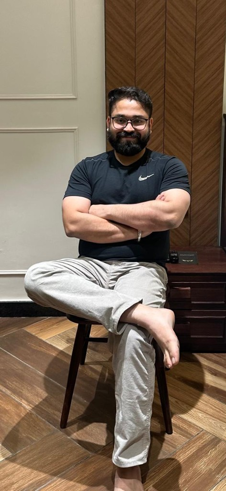
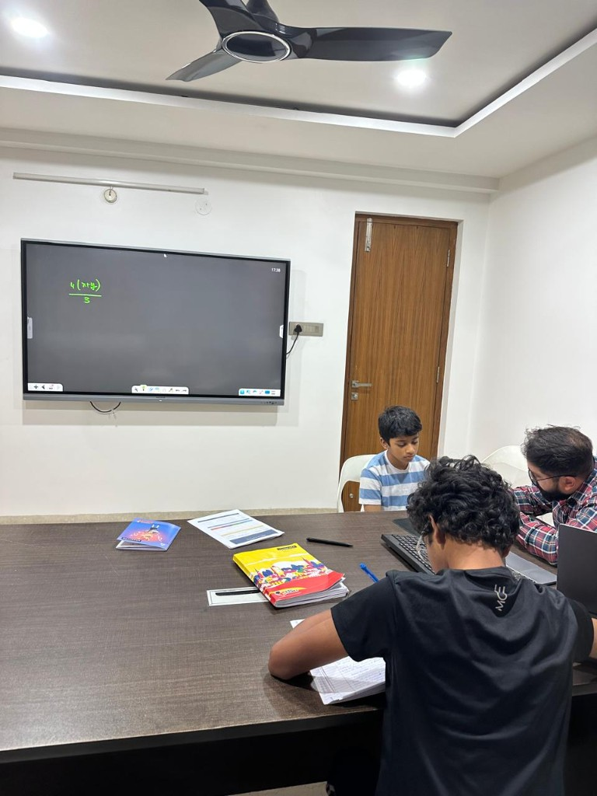

Maths-only specialist
We teach Class 8 Maths and nothing else. No Science. No English. No third language. Depth over breadth — the reason students who struggled with Maths walk out scoring 90+.
Founder-led · Small batches of 3–5 · Our Jubilee Hills centre is 5 mins from Banjara Hills, Madhapur, Film Nagar and Khajaguda · CBSE · ICSE · IGCSE · IB MYP

Detailed report + 1-on-1 parent feedback call included.
No free demos. We assess first, then match your child to the right batch — based on data, not a sales pitch.

Trusted by parents from
We tell you what we are and what we are not — upfront, before you scroll, before you message.
You searched for a Class 8 Maths tutor near home. You found Jubilee Hills' Maths-only specialist — taught personally by the founder, for every board, offline, online, or hybrid.
We teach Class 8 Maths and nothing else. No Science. No English. No third language. Depth over breadth — the reason students who struggled with Maths walk out scoring 90+.
CBSE · ICSE · IGCSE · IB MYP. Taught to your child's exact school syllabus, not a generic curriculum.
We have a proper hybrid setup alongside dedicated offline and online batches. You choose the format when you join — then stay on it with your batch timing. Regular switching between formats is not possible, so every batch stays consistent.
Most parents searching for a Class 8 Maths tutor want the same things: personal attention, a teacher who connects with their child, and a calm learning environment. Ankuram delivers all of that — and adds what a home tutor structurally cannot.
A home tutor gives one-on-one time. We give a batch of 3 to 5 — small enough that every student is seen every class, large enough that students compare approaches, explain solutions to each other, and build the confidence that solo tutoring rarely produces.
The biggest worry with any tutor is the fit. At Ankuram, the same founder — Swastik Sahal, 14 years across CBSE, ICSE, IGCSE and IB MYP — teaches every single batch. During the diagnostic itself, he walks your child through their weak concepts on the spot. Your child knows their teacher before the first class.
Home tutors teach in your living room — siblings, doorbells, no separation between home and study. At our Jubilee Hills centre, your child walks into a quiet classroom, a digital board, and zero distractions. The room itself signals: this is study time.
With a home tutor, most parents have no idea what was taught this week, whether their child understood it, or where they're stuck. We give you a diagnostic report before classes begin, fortnightly written tests, and WhatsApp updates after every class. You always know where your child stands.
Home tutors cancel, arrive late, take leaves. When the tutor isn't available, learning stops. Our schedule is fixed and the programme is structured — your child's progress never depends on one person's availability on one bad day.
Class 8 is where most students start falling behind. The school covers 15 chapters in 10 months. By the time parents realise there is a gap, 3 chapters have already been missed. Big coaching centres can't slow down. Home tutors can't catch the conceptual root cause. Apps can't read the child's confused face.
Every student is assessed on Class 7 foundations — algebraic expansions, factorisation, exponents, linear equations and BODMAS — before any teaching begins. We refuse to teach blind.
Based on diagnostic results, your child is placed into the Fine Basics track (60-min classes) or Weak Basics track (4 classes/week). Same teacher, different pace — paced to your child, not the syllabus.
Fortnightly written tests, parent feedback reports, and WhatsApp updates after every class. You always know where your child stands.
Tell us your child's school, board, and one thing you're worried about. We confirm a slot and share the address.
Class 7 foundation topics: algebraic expansions, factorisation, exponents, linear equations in one variable, BODMAS. You receive a detailed written report and a 1-on-1 parent feedback call within 48 hours.
Based on the diagnostic, your child is matched to the Fine Basics track (60-min classes) or Weak Basics track (4 classes/week). Classes begin within 5–7 days, paced to your child.
Realistic timeline: Diagnostic report in 48 hours · First measurable improvement 4–6 weeks after enrolment begins.
Diagnostic first. Then your child is matched to one of two tracks — based on their actual Class 7 foundations, not guesswork.
For students with strong Class 7 foundations
For students who need foundation repair alongside the syllabus
The extra 30 minutes per class is where the real catch-up happens. Most Class 8 students arrive with Class 6–7 gaps — the diagnostic decides whether you're here.
No registration charges · Pay monthly · Cancel anytime · The diagnostic decides which track — no guessing, no overpaying.
Founder · Teaches every Class 8 Maths class personally
14 years teaching Maths · CBSE · ICSE · IGCSE · IB MYP
Most students who come to me in Class 8 say the same thing — 'I hate Maths.' They don't actually hate Maths. They hate not understanding it. Class 8 is the year that decides everything — the algebra, geometry, and number sense your child builds now is what Class 9 and 10 boards are built on. That's why I refuse to start teaching without a diagnostic. I need to see exactly where the gaps are before I plan a single class.
I teach every batch myself. I know every student's name, where they get stuck, and what clicks for them. In 14 years, I've watched hundreds of students walk in struggling and walk out confident. That's not a brochure line — ask any of the 500+ parents who've reviewed us on Google.
Real parents, real schools, real Class 8 Maths marks.
"We are very happy with Garima's result and progress. Thank you so much."
Niel was struggling with Maths when he joined. By year-end, his confidence and scores had completely turned around.
Abhijay started with weak basics. The diagnostic caught the gaps early, and with consistent classes, he turned the year around.
Four boards, one specialisation. We teach to your child's exact school syllabus — chapter by chapter, in sync with their school timeline.
Selina-aligned ICSE Class 8 Maths — Rational Numbers, Exponents, Algebraic Expressions, Identities, Linear Inequations, Indices, Compound Interest, Sales Tax & VAT, Direct & Inverse Variation, Algebraic Factorisation, Linear Equations, Simultaneous Linear Equations, Quadrilaterals, Construction of Quadrilaterals, Area Theorems on Parallelograms, Pythagoras Theorem, Mensuration, Data Handling, Probability, Trigonometric Ratios.
Cambridge Lower Secondary Stage 8 Mathematics — Number (integers, fractions, percentages, ratios), Algebra (sequences, expressions, equations, inequalities), Geometry & Measure (angles, polygons, transformations, mensuration), Handling Data (statistics, probability). Problem-solving framework throughout, mapped to Cambridge Checkpoint preparation.
IB MYP Year 3 Mathematics — Number, Algebra, Geometry & Trigonometry, Statistics & Probability. Inquiry-based teaching aligned to MYP criteria: Knowing & Understanding, Investigating Patterns, Communicating, Applying Mathematics in Real-Life Contexts. Designed to feed cleanly into MYP Year 4 and DP Maths.
Plot 229, Road No. 72, Prashasan Nagar
Jubilee Hills, Hyderabad – 500096
Telangana, India
Your child's batch slot is decided after the Diagnostic Assessment — we match them with the right pace group, not just whatever slot is open.
All batches run in the evening window:
Mon – Sat · 4:00 PM – 9:00 PM · Sunday by appointment
🚗 Drop-off & pick-up parking available · 🏫 Walking distance from several Jubilee Hills landmarks
3 km from Banjara Hills, 2 km from Film Nagar, 4 km from Madhapur and 6 km from Gachibowli. Most students reach us within 10–15 minutes outside peak traffic.
This page is dedicated to our Class 8 Maths programme — it's our specialty and what most parents come to us for. But we also teach Science, English, and Telugu at our centre. Maths and Science are taught by the founder, Swastik Sahal, personally. If your child needs help in multiple subjects, WhatsApp us and we'll work out the right combination.
Yes — all four boards. We teach to the specific Maths syllabus your child's school follows, chapter by chapter, in sync with school timeline.
We offer offline, online, and hybrid classes — you choose the format when you join. Your child stays on that format with their assigned batch timing; regular switching between offline, online, and hybrid is not possible.
No. We do a paid Diagnostic Assessment (₹750) instead. It gives both of us real data on where your child stands — we believe matching your child to the right batch deserves more than a 45-minute sales pitch.
60 minutes on Class 7 foundation topics that decide success in Class 8 Maths: algebraic expansions, factorisation, exponents, linear equations in one variable, and BODMAS. You receive a detailed written report and a 1-on-1 parent feedback call within 48 hours.
Because it's real work — a proper assessment, a detailed report, a feedback call. Free demos are a sales tactic; paid diagnostics filter for parents who are serious about getting their child the right help.
3 to 5 students per batch — never more. This is non-negotiable and the reason every student gets individual attention every class.
Diagnostic Assessment ₹750 (one-time). Then based on the diagnostic, your child is matched to one of two tracks: Fine Basics (3 classes/week, 60 min each — ₹8,000/month) or Weak Basics (3 classes/week, 90 min each — ₹10,000/month). The longer Weak Basics sessions cover Class 6–7 gap repair alongside the Class 8 syllabus. No registration charges, pay monthly, cancel anytime.
Fortnightly written tests, detailed feedback reports and WhatsApp updates to parents after every class.
Almost every Class 8 student we see has gaps in Class 6–7 concepts. The diagnostic identifies these, and your child is placed on the Weak Basics track (4 classes/week) which builds Class 7 foundations alongside the Class 8 syllabus until gaps close.
Yes — chapter-wise notes, practice worksheets and previous-year school question papers are included in the monthly fee.
Yes — Saturday batches are available. Sunday is by appointment only.
WhatsApp us today, take the diagnostic this week, and classes begin within 5–7 days subject to seat availability.
Book your Diagnostic Assessment (₹750) · Limited seats this term